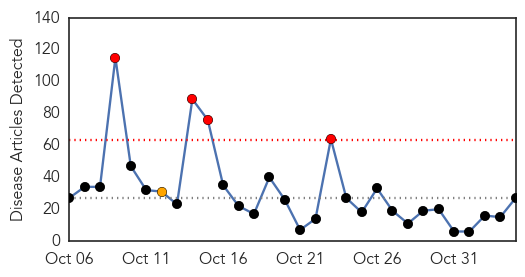
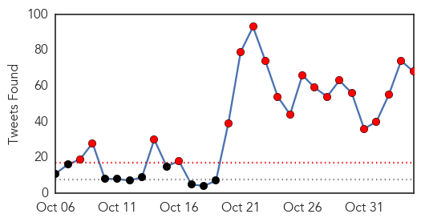
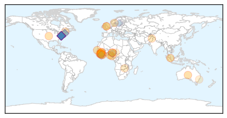
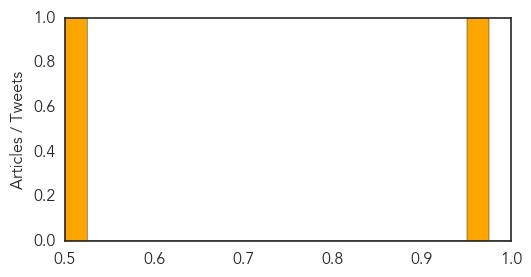

Ebola
30-Day Web Trend
4 alerts, 1 warnings

30-Day Twitter Trend
20 alerts, 0 warnings

Article Locations
Article Confidences

Top Articles:
- 0.999
- Nurse who joined fight against Ebola, news, Health News, AsiaOne YourHealth
- 0.999
- Dr. Tom Frieden on Ebola: Protecting the world from the next pandemic
- 0.999
- Sierra Leone on the doorstep of being Ebola-free, CDC downgrades travel advisory
- 0.998
- Sierra Leone health officials and WHO prepare for post-Ebola Sierra Leone
- 0.998
- New study finds how African immigrants stigmatized during recent Ebola crisis
- 0.997
- Australian Department of Foreign Affairs and Trade
- 0.989
- Health Ministry, WHO and DFID Concludes Assessment Tour on Post Ebola Preparedness in Six districts
- 0.988
- Australian Department of Foreign Affairs and Trade
- 0.986
- 5,893 Suspected Ebola Cases Declared Negative
- 0.983
- Ebola Survivor, Ada Igonoh Welcomes Baby Girl
- 0.980
- Baby joy for Nigerian Ebola survivor
- 0.978
- Australian Department of Foreign Affairs and Trade
- 0.964
- WEST AFRICA: Post-Ebola Women's Groups Need Funding
- 0.933
- Life In Sierra Leone After Ebola
- 0.931
- Health Policy Advisor to the Chief Medical Officer
- 0.853
- Malaria reservoir, Ebola challenges and counterfeit drugs: the ASTMH 64th annual meeting
- 0.824
- Crusaders for Peace Launches ECAP 2 in Cape Mount
- 0.766
- Strengthening Diplomatic Ties: Envoy takes Sierra Leone – Pakistan Relations to another Level
- 0.741
- National thanksgiving service dedicated to Ebola
- 0.724
- Chicken Soup Is Not Enough: Keep your workplace safe – from disease and liability – when employees get sick
- 0.722
- The Urban Legend
- 0.693
- Rebuilding lives in Sierra Leone — SOS Children
- 0.650
- Australian Department of Foreign Affairs and Trade
- 0.587
- West and Central Africa Region Weekly Regional Humanitarian Snapshot (27 October - 02 November 2015) - Cameroon
- 0.567
- I will fight Ebola until the last day says Rtd. Brig. Bio in Kenema
- 0.531
- Foreign troops helped defeat Ebola outbreak
- 0.519
- What’s killing the children of Freetown? Because it’s not Ebola. - Sierra Leone
Top Tweets:
- 0.975
- Sierra Leone health officials and WHO prepare for post-Ebola Sierra Leone - https://t.co/6ZvRa5moy7 ebola
- 0.971
- EBOLA KILLS CHILD TODAY EBOLA CONFIRMED DEATH MEDIA NOT REPORTING RETWEET EVERYONE! https://t.co/lBcSz0wcGP Ebola
- 0.965
- A model of the Ebola epidemics in West Africa incorporating age of infection - https://t.co/PLxsQyCp50 ebola
- 0.954
- The awful West african Ebola outbreak is achingly close to an end. It bears remembering: to date there have been 28607 cases 11314 deaths.
- 0.922
- Ebola survivors team with researchers to fight deadly virus - https://t.co/UgZ3rcj1f8 ebola
- 0.911
- 'Ebola-free' Future for Sierra Leone - https://t.co/X8k7hUtZiL ebola
- 0.910
- 5893 Suspected Ebola Cases Declared Negative - Liberian Daily Observer https://t.co/K9t9Z6BWCG ebola EVD
- 0.903
- High Consequence Infectious Disease Response: Ebola and Other Pathogens a Multi-Disciplinary ... - https://t.co/peXIR7yBvS ebola
- 0.898
- Sierra Leone on the doorstep of being Ebola-free CDC downgrades travel advisory - https://t.co/KK7Ss1Ryw3 ebola
- 0.895
- Ebola outbreak in West Africa - @Oxfam's response https://t.co/oKuh3GdsD4
- 0.890
- Ebola control with ring vaccination - https://t.co/ADoGvXryOw ebola
- 0.881
- A moment of Reflection Prayers and Celebration' for WHO Declaration of Ebola Free in Sierra Leone - https://t.co/otmvKvXmVJ ebola
- 0.880
- I Had Ebola - https://t.co/DdGnqp0uUJ ebola
- 0.879
- Success on Ebola operations in Sierra Leone - https://t.co/jSfrdcQ2ie ebola
- 0.877
- My epidemic prevention experience of anti-Ebola efforts in Liberia - https://t.co/XX5qFijXTv ebola
- 0.876
- Researchers Use Mutated Gene To "Handicap" Ebola Virus Growth - https://t.co/lj1saLUUMQ ebola
- 0.874
- Ebola survivors' needs go beyond medical treatment - https://t.co/CiyPPiAadI ebola
- 0.872
- Ebola disease survivor gives birth baby virus-free - https://t.co/auN8CXgaWR ebola
- 0.870
- As Sierra Leone counts the days to Ebola all clear safe burial teams press on - https://t.co/xEchYuJcgo ebola
- 0.868
- Ebola - https://t.co/JbfCvW2QRT ebola
- 0.858
- EBOLA KILLS CHILD TODAY EBOLA CONFIRMED DEATH MEDIA NOT REPORTING !!!!! https://t.co/lBcSz0wcGP Hannity foxnews
- 0.849
- Sierra Leone to be declared Ebola-free Saturday - https://t.co/jwvbC02Jlw ebola
- 0.845
- Ring vaccination efficacy questioned in Ebola containment - Vaccine News Daily https://t.co/K7FirmzKcb ebola EVD
- 0.843
- EBOLA KILLS CHILD TODAY EBOLA CONFIRMED DEATH MEDIA NOT REPORTING RETWEET EVERYONE! https://t.co/lBcSz0wcGP
- 0.843
- EBOLA KILLS CHILD TODAY EBOLA CONFIRMED DEATH MEDIA NOT REPORTING RETWEET EVERYONE! https://t.co/lBcSz0wcGP
- 0.843
- EBOLA KILLS CHILD TODAY EBOLA CONFIRMED DEATH MEDIA NOT REPORTING RETWEET EVERYONE! https://t.co/lBcSz0wcGP
- 0.842
- WHO Reports New Case of Ebola - https://t.co/P3K8yhWs8n ebola
- 0.830
- Nurse who joined fight against Ebola - https://t.co/udNrPT2Biw ebola
- 0.820
- As Sierra Leone counts the days to Ebola all clear safe burial teams press on - The Guardian https://t.co/TkOkl9YRuU ebola EVD
- 0.817
- EBOLA KILLS CHILD TODAY EBOLA CONFIRMED DEATH MEDIA NOT REPORTING AGAIN! RETWEET EVERYONE! https://t.co/lBcSz0wcGP ChevyCMA IllegalizeIt
- 0.817
- EBOLA KILLS CHILD TODAY EBOLA CONFIRMED DEATH MEDIA NOT REPORTING AGAIN! RETWEET EVERYONE! https://t.co/lBcSz0wcGP
- 0.809
- Nigeria Ebola Success Story Continues - https://t.co/uZLk6ai4WY ebola
- 0.770
- AFROCA promotes sanitation against Ebola - https://t.co/5hMmsh4qaT ebola
- 0.769
- So close: @WHO reports 1 new Ebola case in Guinea. Sierra Leone is 3 days from being declared Ebola-free. https://t.co/8mIE3S2gws hope
- 0.768
- The Ebola Outbreak in Comparison: Liberia and CôteIvoire https://t.co/jNuNQnHvz3
- 0.768
- Ebola returns to Liberia four months after clearance - Vanguard https://t.co/ZrrpxWV72c ebola EVD
- 0.767
- Ebola virus disease in the DemocraticRepublicCongo 1976-2014 t https://t.co/n47ncbfT2F
- 0.750
- Early hospitalization key to survival for Ebola victims - https://t.co/fzFocuXDWD ebola
- 0.733
- Ring vaccination efficacy questioned in Ebola containment - https://t.co/ZWHTwtm8j3 ebola
- 0.718
- IMF supports Liberia with post-Ebola PFM reform - Public Finance International https://t.co/8DnA0sSBZp ebola EVD
- 0.716
- Entry Mechanism Could Deliver Drugs to Infected Ebola Cells - https://t.co/ssNrBlTxZV ebola
- 0.714
- Ebola's Immune Escape - The Scientist https://t.co/mTsnd0Ut69 ebola EVD
- 0.711
- Health worker incentives: survey report Sierra Leone Ebola https://t.co/bvHuuzbye7
- 0.710
- Entry Mechanism Could Deliver Drugs to Infected Ebola Cells - UB School of Medicine and Biomedical... https://t.co/Mh7bVxE0K8 ebola EVD
- 0.709
- Ebola: Pushing Politics Aside - https://t.co/gotiUWQ9JX ebola
- 0.701
- IMF supports Liberia with post-Ebola PFM reform - https://t.co/7jX27TuKIR ebola
- 0.700
- City students to deliberate Syria ebola issues at Model UN - https://t.co/AWzrXxXW6l ebola
- 0.690
- Hospitals more prepared to handle Ebola but still lack resources - https://t.co/B2XSagQ50e ebola
- 0.683
- Nigerian doctor who survived Ebola gives birth in California to virus-free girl - https://t.co/WizBNCXAJD ebola
- 0.682
- Post-Ebola Women's Groups Need Funding - https://t.co/VEFaLYHSkW ebola
Showing top 50 tweets...
Chikungunya
30-Day Web Trend
30-Day Twitter Trend
0 alerts, 0 warnings

Article Locations
Article Confidences
Top Articles:
Top Tweets:
-
No tweets found for Nov 04, 2015